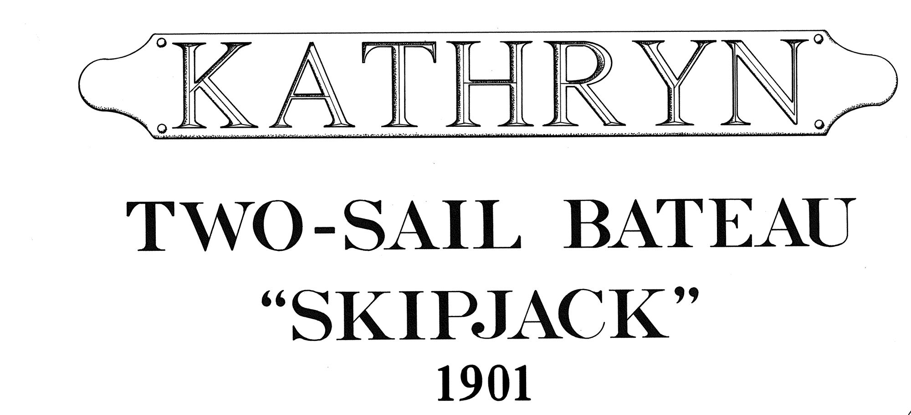

Package indexS01-V01 Vessel name and identity
Original scan pixels: [1008, 1003, 5844, 3211]; source SHA-256: 2331daad060a890dcaf424a5c3148d069958564fa24096fce737f284e43e9b7f.
Native lossless view · Raw OCR ·
Word coordinates/confidence · Manifest

Checked construction records
Raw OCR — requires review
2 “a p ; " f 3
Z iy if ! q % a
R “Ly f 3 4 oy
f/ “ } iY
4 2 :
£7 Sworenmenmeearnentt y
: f 3 sama
f : :
sitiendadd . x“ . Sheila inutile a a cts Seat heinrich daethashiihhn cb pacesbebestasakedi ;
TWO-SAIL BATEAU
“SKIPJACK”
1901
Original-resolution tiles and native bounds
- tile-00-00.png [1008, 1003, 2608, 2603]
- tile-00-01.png [2480, 1003, 4080, 2603]
- tile-00-02.png [3952, 1003, 5552, 2603]
- tile-00-03.png [5424, 1003, 5844, 2603]
- tile-01-00.png [1008, 2475, 2608, 3211]
- tile-01-01.png [2480, 2475, 4080, 3211]
- tile-01-02.png [3952, 2475, 5552, 3211]
- tile-01-03.png [5424, 2475, 5844, 3211]